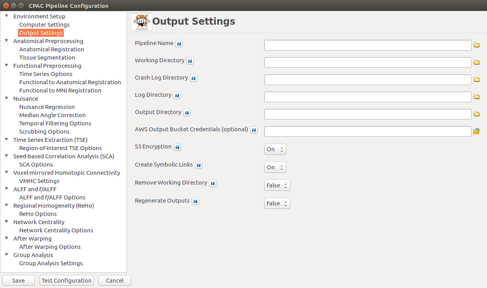

Output Settings¶

- Pipeline Name - [text]: Name for this pipeline configuration - useful for identification. Note that including an individual participant’s ID code in this will presently cause C-PAC to crash.
- Working Directory - [path]: Directory where CPAC should store temporary and intermediate files. Path should not contain spaces.
- Crash Log Directory - [path]: Directory where CPAC should write crash logs. Path should not contain spaces.
- Log Directory - [path]: Directory where CPAC should place run logs. Path should not contain spaces.
- Output Directory - [path]: Directory where CPAC should place processed data. This can also be an S3 bucket path prepended with ‘s3://’. Path should not contain spaces.
- AWS Output Bucket Credentials (optional) - [path]: If setting the Output Directory to an S3 bucket, insert the path to your AWS credentials file here.,
- S3 Encryption - [On, Off]: Enable server-side 256-AES encryption on data to the S3 bucket,
- Create Symbolic Links - [On, Off]: Create a well-organized version of the output directory. Highly recommended.
- Remove Working Directory [False, True]: Deletes the contents of the Working Directory after running. This saves disk space, but any additional preprocessing or analysis will have to be completely re-run.)
- Regenerate Outputs - [False, True]: Uses the contents of the working directory to regenerate all outputs and their symbolic links. Requires an intact working directory from a previous C-PAC run.
Configuration Without the GUI¶
The following key/value pairs must be defined in your pipeline configuration YAML for C-PAC to run:
| Key | Description | Potential Values |
|---|---|---|
| pipelineName | A name that you would like to give to this pipeline. | A string. |
| workingDirectory | The working directory to be used by the pipeline during the run. | A path (e.g.,’/data/my_analysis/working’). |
| crashLogDirectory | The directory where C-PAC will store crash logs. | A path (e.g.,’/data/my_analysis/crash’). |
| logDirectory | Directory where CPAC should place run logs. | A path (e.g.,’/data/my_analysis/logs’). |
| outputDirectory | The output directory for the pipeline. | A path (e.g.,’/data/my_analysis/output’). |
| awsOutputBucketCredentials | Path to a set of AWS credentials if your output directory is set to an S3 bucket. | A path (e.g.,’/data/my_analysis/credentials.csv’). |
| s3Encryption | Enable server-side 256-AES encryption on data to the S3 bucket. | A list where ‘1’ represents ‘yes’ and ‘0’ represents ‘no’ (e.g., ‘[1]’). |
| runSymbolicLinks | Create a user-friendly, well-organized version of the output directory. | A list where ‘1’ represents ‘yes’ and ‘0’ represents ‘no’ (e.g., ‘[1]’). |
| removeWorkingDir | Deletes the contents of the Working Directory after running. Saves disk space, but steps will need to be re-run. | True,False |
| reGenerateOutputs | Uses the contents of the Working Directory to regenerate all outputs and their symbolic links. | True,False |
The box below contains an example of what these parameters might look like when defined in the YAML:
pipelineName : gelastic_epilepsy_pipeline
workingDirectory : /data/working
crashLogDirectory : /data/crash
logDirectory : /data/logs
outputDirectory : /data/output
awsOutputBucketCredentials : /data/credentials.csv
s3Encryption : [1]
runSymbolicLinks : [1]
removeWorkingDir : False
reGenerateOutputs : False